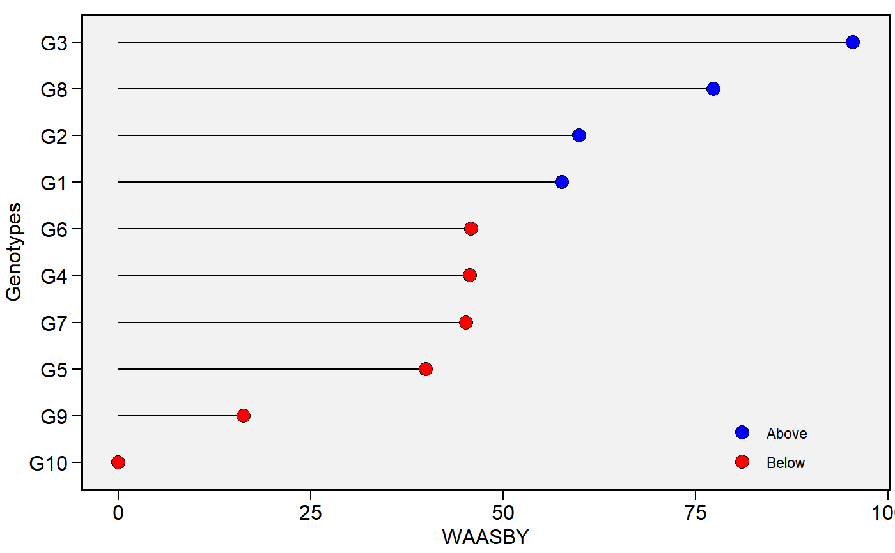
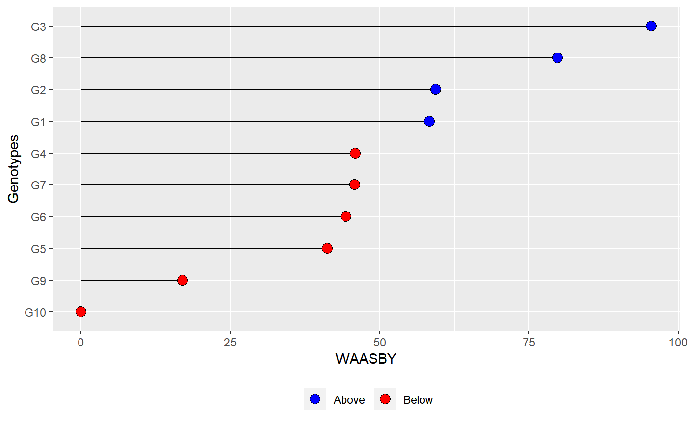

![[Stable]](figures/lifecycle-stable.svg)
Plot heat maps with genotype ranking in two ways.
Usage
plot_waasby(
x,
var = 1,
export = F,
file.type = "pdf",
file.name = NULL,
plot_theme = theme_metan(),
width = 6,
height = 6,
size.shape = 3.5,
size.tex.lab = 12,
col.shape = c("blue", "red"),
x.lab = "WAASBY",
y.lab = "Genotypes",
x.breaks = waiver(),
resolution = 300,
...
)Arguments
- x
The
WAASBY object- var
The variable to plot. Defaults to
var = 1the first variable ofx.- export
Export (or not) the plot. Default is
T.- file.type
The type of file to be exported. Default is
pdf, Graphic can also be exported in*.tiffformat by declaringfile.type = "tiff".- file.name
The name of the file for exportation, default is
NULL, i.e. the files are automatically named.- plot_theme
The graphical theme of the plot. Default is
plot_theme = theme_metan(). For more details, seeggplot2::theme().- width
The width "inch" of the plot. Default is
8.- height
The height "inch" of the plot. Default is
7.- size.shape
The size of the shape in the plot. Default is
3.5.- size.tex.lab
The size of the text in axis text and labels.
- col.shape
A vector of length 2 that contains the color of shapes for genotypes above and below of the mean, respectively. Default is
c("blue", "red").- x.lab
The label of the x axis in the plot. Default is
"WAASBY".- y.lab
The label of the y axis in the plot. Default is
"Genotypes".- x.breaks
The breaks to be plotted in the x-axis. Default is
authomatic breaks. New arguments can be inserted asx.breaks = c(breaks)- resolution
The resolution of the plot. Parameter valid if
file.type = "tiff"is used. Default is300(300 dpi)- ...
Currently not used.
Author
Tiago Olivoto tiagoolivoto@gmail.com
Examples
# \donttest{
library(metan)
library(ggplot2)
waasby <- waasb(data_ge,
resp = GY,
gen = GEN,
env = ENV,
rep = REP)
#> Evaluating trait GY |============================================| 100% 00:00:00
#> Method: REML/BLUP
#> Random effects: GEN, GEN:ENV
#> Fixed effects: ENV, REP(ENV)
#> Denominador DF: Satterthwaite's method
#> ---------------------------------------------------------------------------
#> P-values for Likelihood Ratio Test of the analyzed traits
#> ---------------------------------------------------------------------------
#> model GY
#> COMPLETE NA
#> GEN 1.11e-05
#> GEN:ENV 2.15e-11
#> ---------------------------------------------------------------------------
#> All variables with significant (p < 0.05) genotype-vs-environment interaction
waasby2 <- waas(data_ge,
resp = GY,
gen = GEN,
env = ENV,
rep = REP)
#> variable GY
#> ---------------------------------------------------------------------------
#> AMMI analysis table
#> ---------------------------------------------------------------------------
#> Source Df Sum Sq Mean Sq F value Pr(>F) Proportion Accumulated
#> ENV 13 279.574 21.5057 62.33 0.00e+00 NA NA
#> REP(ENV) 28 9.662 0.3451 3.57 3.59e-08 NA NA
#> GEN 9 12.995 1.4439 14.93 2.19e-19 NA NA
#> GEN:ENV 117 31.220 0.2668 2.76 1.01e-11 NA NA
#> PC1 21 10.749 0.5119 5.29 0.00e+00 34.4 34.4
#> PC2 19 9.924 0.5223 5.40 0.00e+00 31.8 66.2
#> PC3 17 4.039 0.2376 2.46 1.40e-03 12.9 79.2
#> PC4 15 3.074 0.2049 2.12 9.60e-03 9.8 89.0
#> PC5 13 1.446 0.1113 1.15 3.18e-01 4.6 93.6
#> PC6 11 0.932 0.0848 0.88 5.61e-01 3.0 96.6
#> PC7 9 0.567 0.0630 0.65 7.53e-01 1.8 98.4
#> PC8 7 0.362 0.0518 0.54 8.04e-01 1.2 99.6
#> PC9 5 0.126 0.0252 0.26 9.34e-01 0.4 100.0
#> Residuals 252 24.367 0.0967 NA NA NA NA
#> Total 536 389.036 0.7258 NA NA NA NA
#> ---------------------------------------------------------------------------
#>
#> All variables with significant (p < 0.05) genotype-vs-environment interaction
#> Done!
plot_waasby(waasby)

plot_waasby(waasby2) +
theme_gray() +
theme(legend.position = "bottom",
legend.background = element_blank(),
legend.title = element_blank(),
legend.direction = "horizontal")

# }